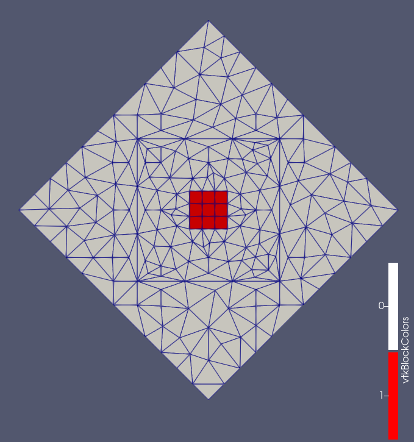

- boundaryThe input MeshGenerator defining the output outer boundary and required Steiner points.
C++ Type:MeshGeneratorName
Controllable:No
Description:The input MeshGenerator defining the output outer boundary and required Steiner points.
XYDelaunayGenerator
Triangulates meshes within boundaries defined by input meshes.
An input mesh will be used to define the outer boundary of the generated output mesh, as well as to specify any Steiner points interior to that boundary which must be included in as output mesh vertices. Additional interior vertices can be automatically generated by specifying a desired triangle area (either as a constant or as a function of triangle center location). Additional interior boundary "holes" can be generated from inputs from other specified "holes" mesh generators.
Each input mesh, as specified in the "boundary" parameter and optionally in the "holes" parameter, can define a ring of boundary segments either by including edge elements for each segment or by including face elements whose external edges are to be treated as segments. For the outer "boundary" mesh, a subset of edges or faces can be examined instead of the entire mesh, using the "input_subdomain_names" parameter to list edge element subdomains or the "input_boundary_names" parameter to list face boundaries.
If multiple boundary rings exist in a mesh, only the ring enclosing the rest of the mesh is considered to be "the" boundary. Input meshes which are not simply connected, which therefore have multiple outer boundary rings, are not yet supported.
If the input boundary mesh has nodes inside the boundary ring, these nodes are treated as required in the output mesh. This is useful for ensuring that the output mesh has a vertex at a specific point of interest. For meshes with interior nodes that should not be considered required, a user can first use a LowerDBlockFromSidesetGenerator to generate the desired boundary ring and a BlockDeletionGenerator on that to remove everything except the desired boundary edges. Setting "delete_exteriors" to false is necessary in this workflow to prevent the new edge elements from being deleted along with their interior-parent elements.
Using stitching options, meshes used as "holes" can subsequently be stitched into those portions of the output mesh. For this use case some care may be required: refinement of stitched hole boundaries should be disallowed so that the boundary nodes in the newly triangulated mesh still precisely match the boundary nodes in the hole mesh.
Interior vertices can be adjusted after mesh generation using the "smooth_triangulation" parameter, to produce a more "smooth" mesh, but currently the only mesh smoother option is a simple Laplacian smoother; this can have unwanted side-effects on meshes with concave boundaries or poor nodal valences, and so it is disabled by default for robustness.
Examples
Using instances of the PolyLineMeshGenerator to create a boundary and a few holes, followed by a XYDelaunayGenerator object to triangulate the region between them, the Mesh block shown in the input file snippet below generates the final mesh shown in Figure 1.
For this example a specified fixed interpolation of boundary edges is used, but refinement to a desired maximum triangle size allows automatic placement of nodes in the mesh interior.
[Mesh]
[outer_bdy]
type = PolyLineMeshGenerator
points = '-1.0 0.0 0.0
0.0 -1.0 0.0
1.0 0.0 0.0
0.0 2.0 0.0'
loop = true
[]
[hole_1]
type = PolyLineMeshGenerator
points = '-0.5 -0.1 0.0
-0.3 -0.1 0.0
-0.3 0.1 0.0
-0.5 0.1 0.0'
loop = true
[]
[hole_2]
type = PolyLineMeshGenerator
points = '0.3 -0.1 0.0
0.5 -0.1 0.0
0.5 0.1 0.0
0.3 0.1 0.0'
loop = true
[]
[triang]
type = XYDelaunayGenerator
boundary = 'outer_bdy'
holes = 'hole_1
hole_2'
add_nodes_per_boundary_segment = 3
refine_boundary = false
desired_area = 0.05
[]
[]

Figure 1: Fig. 1: Resulting triangulated mesh from a polyline boundary and holes.
In the input file snippet below, hole stitching is done recursively, so that each internal "boundary" polyline (after refinement) remains preserved in the final mesh shown in Figure 2.
[Mesh]
[inner_square_sbd_0]
type = GeneratedMeshGenerator
dim = 2
nx = 3
ny = 3
xmin = -0.4
xmax = 0.4
ymin = -0.4
ymax = 0.4
[]
[inner_square]
type = SubdomainIDGenerator
input = inner_square_sbd_0
subdomain_id = 1 # Exodus dislikes quad ids matching tri ids
[]
[layer_2_bdy]
type = PolyLineMeshGenerator
points = '-1.0 0.0 0.0
0.0 -1.0 0.0
1.0 0.0 0.0
0.0 1.0 0.0'
loop = true
[]
[layer_3_bdy]
type = PolyLineMeshGenerator
points = '-1.5 -1.5 0.0
1.5 -1.5 0.0
1.5 1.5 0.0
-1.5 1.5 0.0'
loop = true
[]
[layer_4_bdy]
type = PolyLineMeshGenerator
points = '-4.0 0.0 0.0
0.0 -4.0 0.0
4.0 0.0 0.0
0.0 4.0 0.0'
loop = true
[]
[triang_2]
type = XYDelaunayGenerator
boundary = 'layer_2_bdy'
holes = 'inner_square'
stitch_holes = 'true'
refine_holes = 'false'
verify_holes = false
add_nodes_per_boundary_segment = 2
refine_boundary = false
desired_area = 0.05
[]
[triang_3]
type = XYDelaunayGenerator
boundary = 'layer_3_bdy'
holes = 'triang_2'
stitch_holes = 'true'
refine_holes = 'false'
add_nodes_per_boundary_segment = 2
refine_boundary = false
desired_area = 0.1
[]
[triang_4]
type = XYDelaunayGenerator
boundary = 'layer_4_bdy'
holes = 'triang_3'
stitch_holes = 'true'
refine_holes = 'false'
verify_holes = false
add_nodes_per_boundary_segment = 2
refine_boundary = true
desired_area = 0.2
[]
[]

Figure 2: Fig. 2: Resulting triangulated mesh with nested polyline boundaries and an internal grid.
Input Parameters
- add_nodes_per_boundary_segment0How many more nodes to add in each outer boundary segment.
Default:0
C++ Type:unsigned int
Controllable:No
Description:How many more nodes to add in each outer boundary segment.
- algorithmBINARYControl the use of binary search for the nodes of the stitched surfaces.
Default:BINARY
C++ Type:MooseEnum
Controllable:No
Description:Control the use of binary search for the nodes of the stitched surfaces.
- desired_area0Desired (maximum) triangle area, or 0 to skip uniform refinement
Default:0
C++ Type:double
Controllable:No
Description:Desired (maximum) triangle area, or 0 to skip uniform refinement
- desired_area_funcDesired area as a function of x,y; omit to skip non-uniform refinement
C++ Type:std::string
Controllable:No
Description:Desired area as a function of x,y; omit to skip non-uniform refinement
- hole_boundariesBoundary names to set on holes. Default IDs are numbered up from 1.
C++ Type:std::vector<BoundaryName>
Controllable:No
Description:Boundary names to set on holes. Default IDs are numbered up from 1.
- holesThe MeshGenerators that define mesh holes.
C++ Type:std::vector<MeshGeneratorName>
Controllable:No
Description:The MeshGenerators that define mesh holes.
- input_boundary_names2D-input-mesh boundaries defining the output mesh outer boundary
C++ Type:std::vector<BoundaryName>
Controllable:No
Description:2D-input-mesh boundaries defining the output mesh outer boundary
- input_subdomain_names1D-input-mesh subdomains defining the output mesh outer boundary
C++ Type:std::vector<SubdomainName>
Controllable:No
Description:1D-input-mesh subdomains defining the output mesh outer boundary
- output_boundaryBoundary name to set on new outer boundary. Default ID 0.
C++ Type:BoundaryName
Controllable:No
Description:Boundary name to set on new outer boundary. Default ID 0.
- output_subdomain_nameSubdomain name to set on new triangles.
C++ Type:SubdomainName
Controllable:No
Description:Subdomain name to set on new triangles.
- refine_boundaryTrueWhether to allow automatically refining the outer boundary.
Default:True
C++ Type:bool
Controllable:No
Description:Whether to allow automatically refining the outer boundary.
- refine_holesWhether to allow automatically refining each hole boundary.
C++ Type:std::vector<bool>
Controllable:No
Description:Whether to allow automatically refining each hole boundary.
- smooth_triangulationFalseWhether to do Laplacian mesh smoothing on the generated triangles.
Default:False
C++ Type:bool
Controllable:No
Description:Whether to do Laplacian mesh smoothing on the generated triangles.
- stitch_holesWhether to stitch to the mesh defining each hole.
C++ Type:std::vector<bool>
Controllable:No
Description:Whether to stitch to the mesh defining each hole.
- verbose_stitchingFalseWhether mesh stitching should have verbose output.
Default:False
C++ Type:bool
Controllable:No
Description:Whether mesh stitching should have verbose output.
- verify_holesTrueVerify holes do not intersect boundary or each other. Asymptotically costly.
Default:True
C++ Type:bool
Controllable:No
Description:Verify holes do not intersect boundary or each other. Asymptotically costly.
Optional Parameters
- control_tagsAdds user-defined labels for accessing object parameters via control logic.
C++ Type:std::vector<std::string>
Controllable:No
Description:Adds user-defined labels for accessing object parameters via control logic.
- enableTrueSet the enabled status of the MooseObject.
Default:True
C++ Type:bool
Controllable:No
Description:Set the enabled status of the MooseObject.
- save_with_nameKeep the mesh from this mesh generator in memory with the name specified
C++ Type:std::string
Controllable:No
Description:Keep the mesh from this mesh generator in memory with the name specified
Advanced Parameters
- nemesisFalseWhether or not to output the mesh file in the nemesisformat (only if output = true)
Default:False
C++ Type:bool
Controllable:No
Description:Whether or not to output the mesh file in the nemesisformat (only if output = true)
- outputFalseWhether or not to output the mesh file after generating the mesh
Default:False
C++ Type:bool
Controllable:No
Description:Whether or not to output the mesh file after generating the mesh
- show_infoFalseWhether or not to show mesh info after generating the mesh (bounding box, element types, sidesets, nodesets, subdomains, etc)
Default:False
C++ Type:bool
Controllable:No
Description:Whether or not to show mesh info after generating the mesh (bounding box, element types, sidesets, nodesets, subdomains, etc)